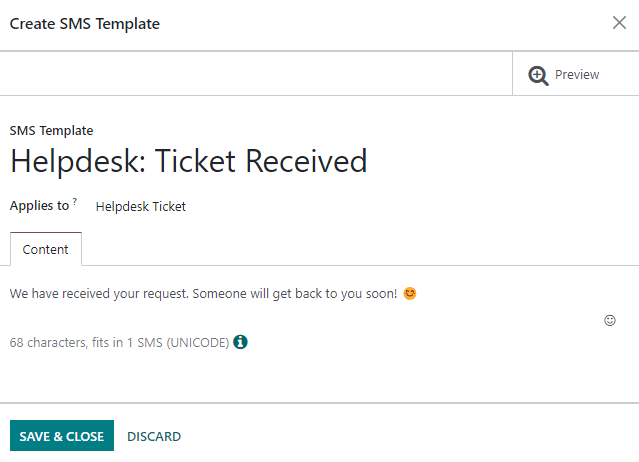
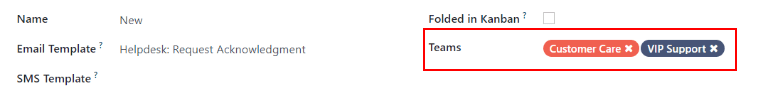

Getting started with Helpdesk¶
Odoo Helpdesk is a ticket-based customer support application. Teams can track, prioritize, and solve customer issues from their pipeline, which is organized in customizable stages. Multiple teams can be configured and managed in one dashboard.
Create Helpdesk teams¶
Setting up multiple teams allows for tickets to be grouped by location or by support type.
To view or modify Helpdesk teams, go to . To create a new team, click on the New button in the top left of the dashboard. From there, name the new team, and fill out the remaining fields as defined in the following sections on the form.

Assignment & Visibility¶
Determine to whom the team will be visible¶
Under the Visibility section, determine who can view this team and its tickets.
Invited internal users have access to the team and tickets they are following. This can be modified on each individual ticket.
All internal users have access to the team and all of its tickets without being a follower.
Invited portal users and all internal users have access to the team without being a follower. Portal users will only be able to access tickets that they are following.
Example
A Customer Support team intended to handle general issues with shipping and product issues
would have the visibility setting Invited portal users and all internal users.
However, a Financial Services team handling tickets related to accounting or tax information
would only need to be visible to Invited internal users.
Automatically assign new tickets¶
When tickets are received, they will need to be assigned to a member of the support team. This can be done manually on each ticket individually, or through Automatic Assignment. Check the box next to Automatic Assignment to enable the feature for this team.

Select one of the following assignment methods, based on how workload should be allocated across the team:
- Each user is assigned an equal number of tickets assigns tickets to team members
based on total ticket count, regardless of the number of open or closed tickets they are currently assigned.
- Each user has an equal number of open tickets assigned tickets to team members based
on how many open tickets they are currently assigned. This option is useful for automatically delegating a heavier workload to high-performers who tend to close tickets quickly.
Finally, add the Team Members who will be assigned tickets for this team. Leave the field empty to include all employees who have the proper assignments and access rights configured in their user account settings.
Note
If an employee has time off scheduled in the Time Off application, they will not be assigned tickets during that time. If no employees are available, the system will look ahead until there is a match.
See also
Create or modify kanban stages¶
Stages are used to organize the Helpdesk pipeline and track the progress of tickets. Stages are customizable, and can be renamed to fit the needs of each team.
To view or modify Helpdesk stages, go to .
Important
Developer mode must be activated in order to access the stages menu. To activate developer mode go to and click on Activate the developer mode.
The list view shows an overview of all the stages currently available in Helpdesk. They are listed in the order they appear in the pipeline. To change the order of the stages, use the arrow buttons on the left side of the list.
Tip
Change the stage order on the kanban view by dragging and dropping individual columns.

To create a new stage, click on the New button in the top left of the dashboard. Next, choose a name for the new stage, and add a description (though it is not required). Fill out the remaining fields following the steps below.

Add email and SMS templates to stages¶
When an Email Template is added to a stage, an email is automatically sent to the the customer when a ticket reaches that specific stage in the helpdesk pipeline. Likewise, adding an SMS Template will result in an SMS text message being sent to the customer.
Important
SMS Text Messaging is an In-App Purchase (IAP) service that requires prepaid credits to work. Refer to SMS Pricing FAQ for additional information.
To select an existing email template, select it from the Email Template field. Click on the arrow key to the right of the field to edit the template.
To create a new template, click the field and begin typing a new template title. Then select Create and edit, and complete the form details.
Follow the same steps to select, edit, or create an SMS Template.
See also
Assign stages to a team¶
Make a selection in the Teams field on the Stages form. More than one team may be selected, since the same stage(s) can be assigned to multiple teams.

Fold a stage¶
Check the Folded in Kanban box on the Stages form to display this stage as folded by default in the kanban view for this team.
Warning
Tickets that reach a folded stage are considered closed. Closing a ticket before the work is completed can result in reporting and communication issues. This setting should only be enabled for stages that are considered closing stages.
Alternatively, stages can be temporarily folded in the kanban view, by clicking on the settings icon and selecting Fold.
Note
Manually folding a stage from the kanban view will not close the tickets in the stage.